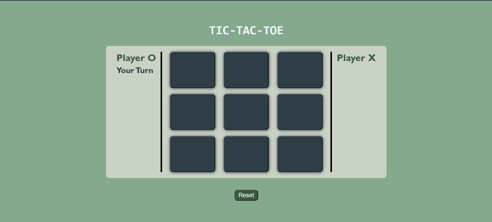
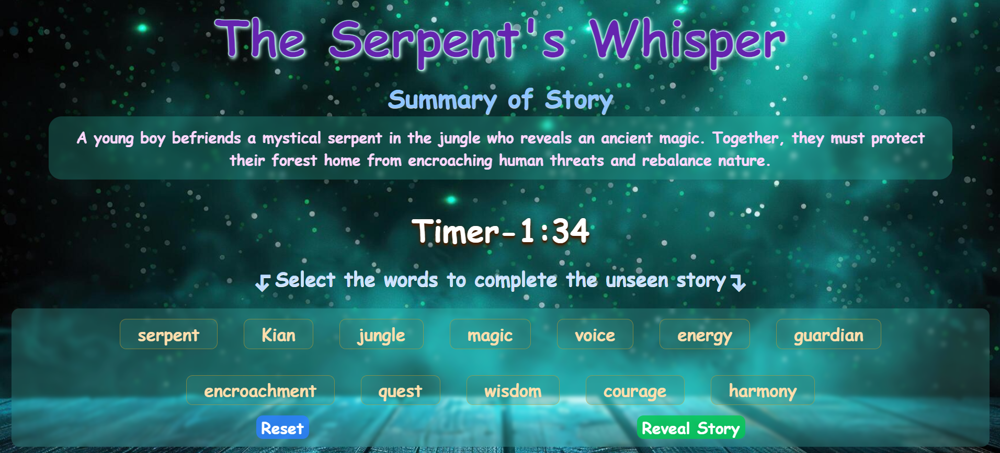
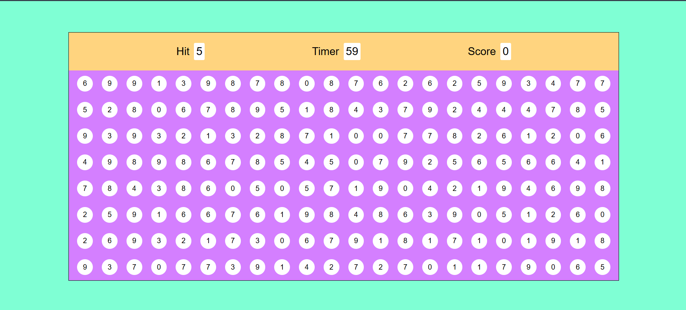
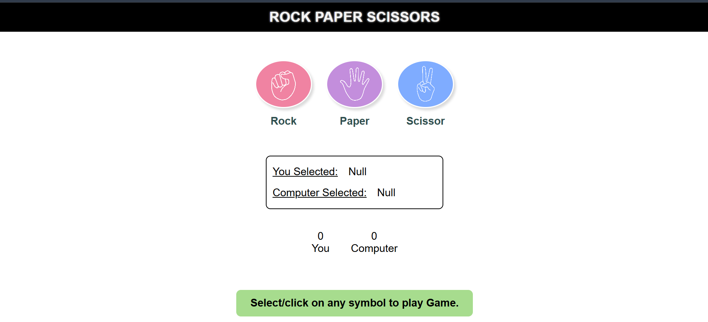

A classic two-player Tic-Tac-Toe game with a clean, minimalist design. The intuitive interface clearly indicates the current player's turn, making it easy to play against a friend. The game also includes a reset button to start over.

Story Stitchers is an engaging game where you piece together a hidden story by selecting words from a list of hints. It blends deduction and imagination, with a focus on fun and quirky narratives. If you get stuck, you can reveal the original story.

A Pop into action with Bubble Pop! This fast-paced game challenges you to click the matching number in the bubbles to earn points. Beat the clock and get the highest score possible. Be quick, be accurate, and have a blast!

Get ready for the ultimate showdown in this classic game of Rock, Paper, Scissors! Challenge a friend or play against the computer. Choose your hand signal and see if you can outsmart your opponent. Will you triumph with the strength of a rock, the precision of paper, or the sharpness of scissors? It's a game of chance, strategy, and fun!